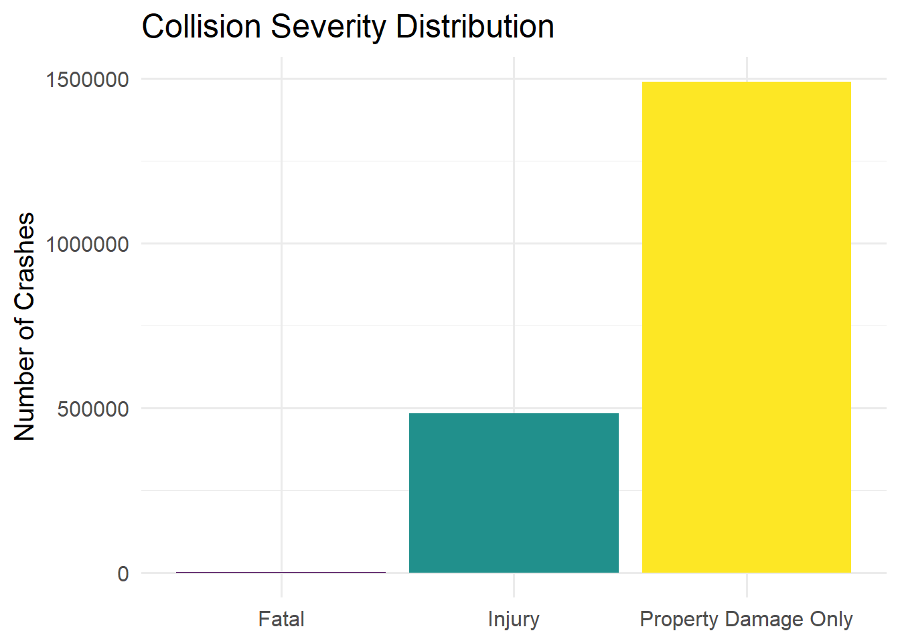
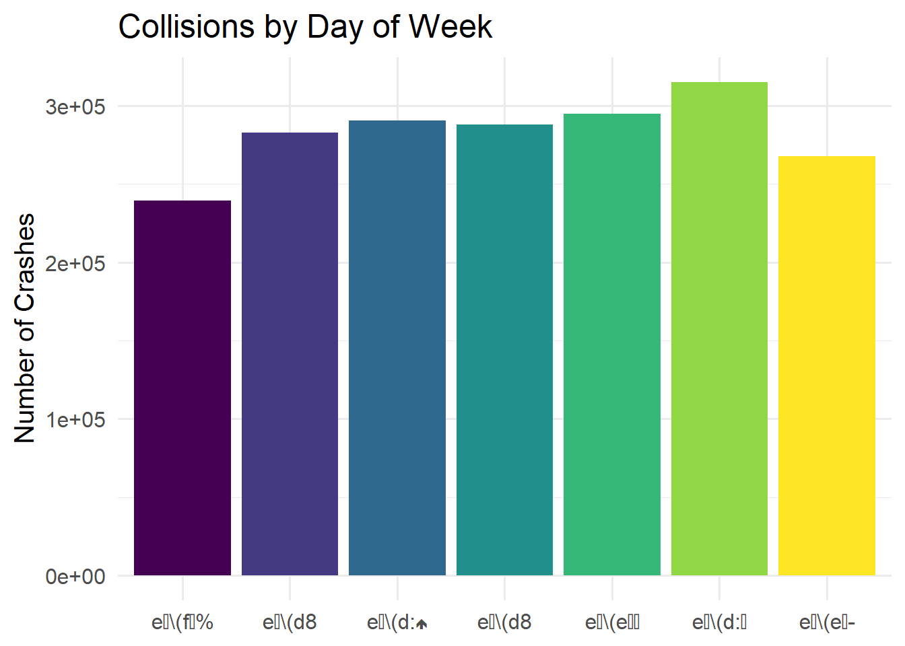
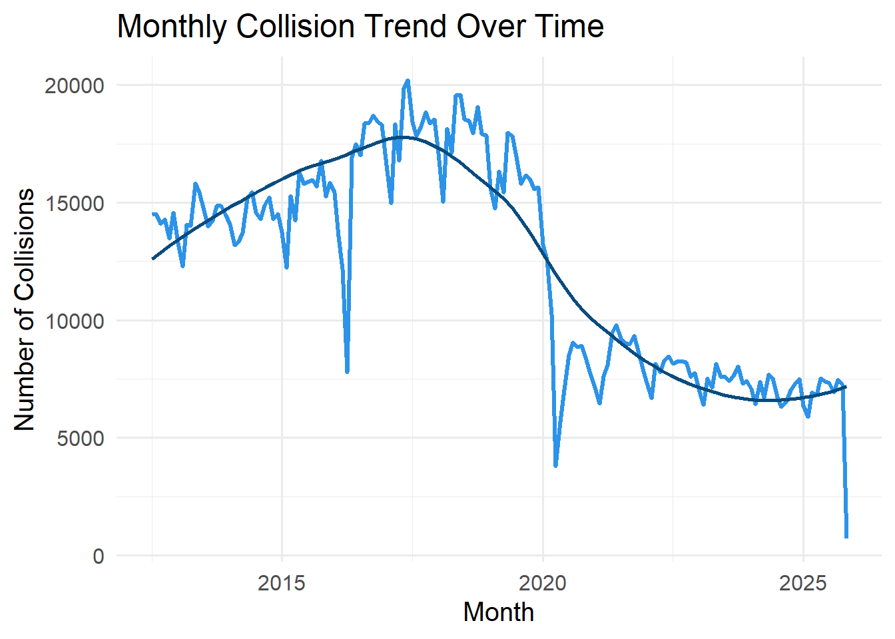
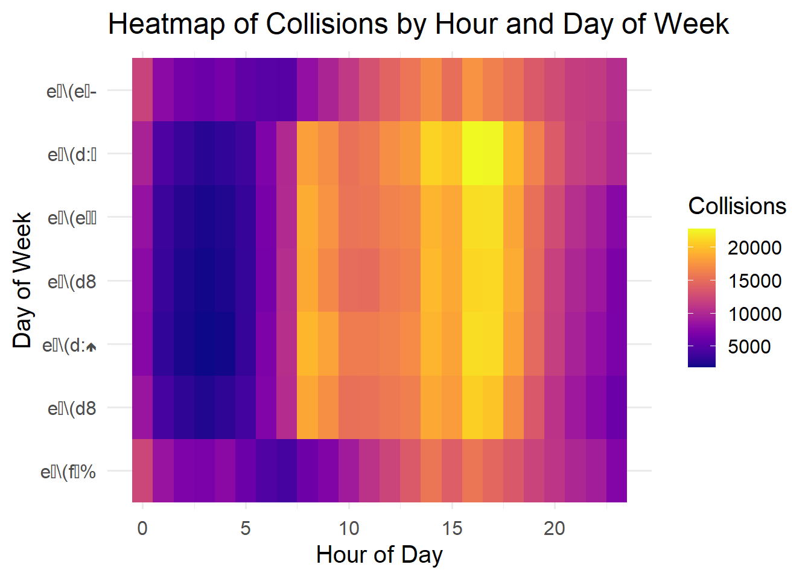
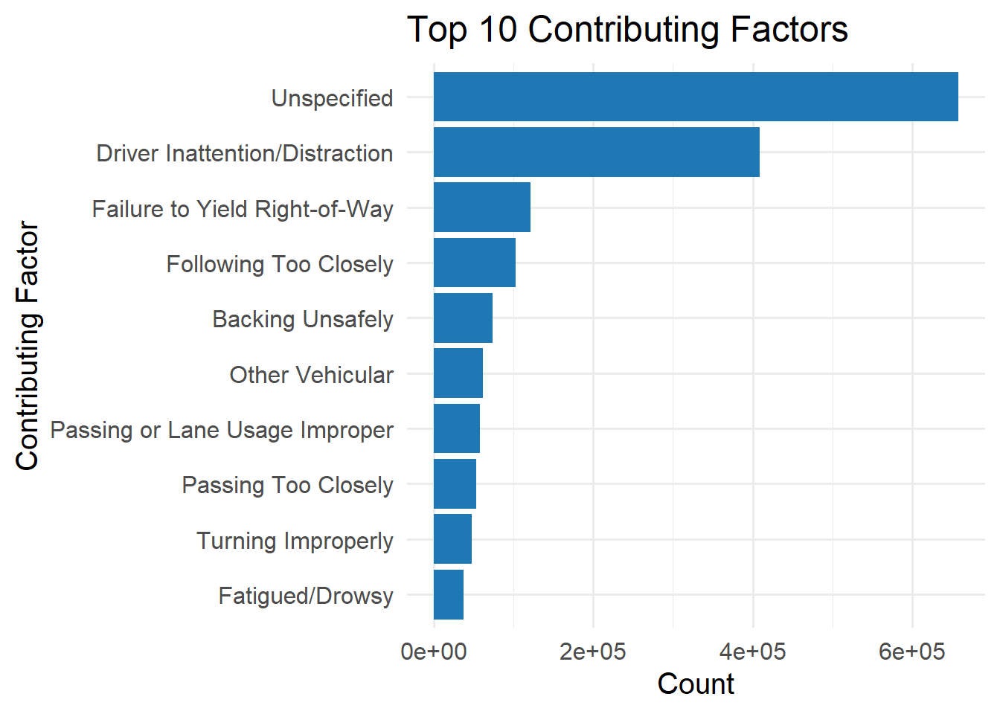
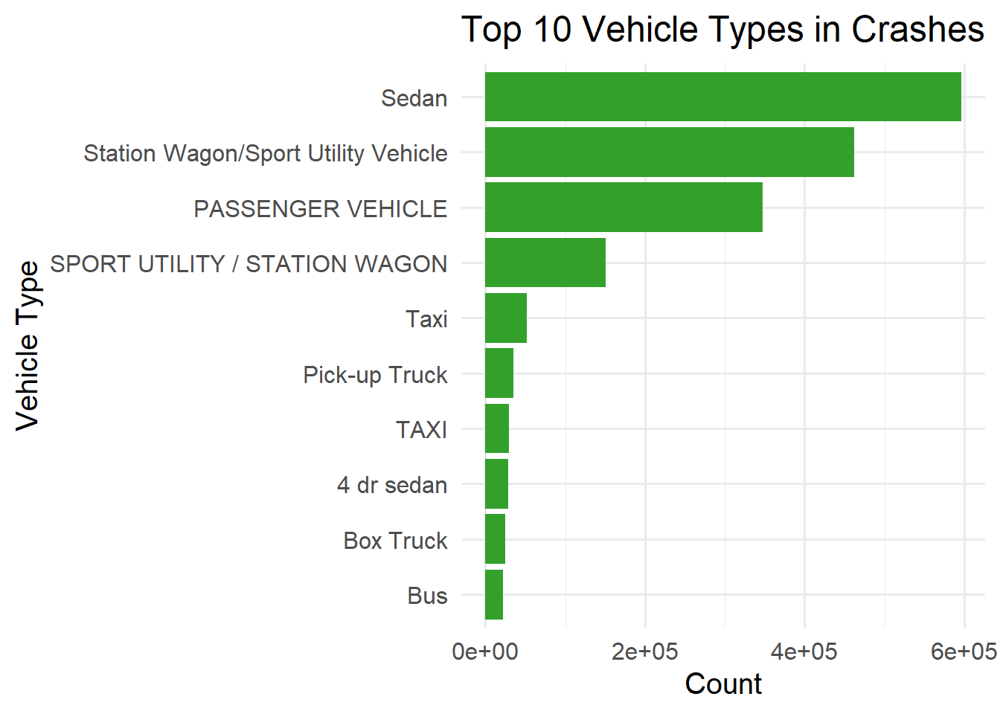

Exploratory Analyses: Overview
Exploratory Analyses: Overview
This section provides a descriptive overview of NYC motor vehicle collisions (MVCs), including borough patterns, severity distribution, and temporal trends.
1. Collision Counts by Borough
mvc_clean |>
count(borough, name = "n") |>
ggplot(aes(x = reorder(borough, n), y = n, fill = borough)) +
geom_col() +
scale_fill_viridis_d() +
coord_flip() +
labs(
title = "Total Collisions by Borough",
x = "Borough",
y = "Number of Collisions"
) +
theme_minimal(base_size = 15) +
theme(legend.position = "none")
2. Severity Distribution
mvc_clean |>
mutate(
severity = case_when(
number_of_persons_killed > 0 ~ "Fatal",
number_of_persons_injured > 0 ~ "Injury",
TRUE ~ "Property Damage Only"
)
) |>
count(severity) |>
ggplot(aes(x = severity, y = n, fill = severity)) +
geom_col() +
scale_fill_viridis_d() +
labs(
title = "Collision Severity Distribution",
x = NULL,
y = "Number of Crashes"
) +
theme_minimal(base_size = 15) +
theme(legend.position = "none")
3. Collisions by Hour of Day
mvc_clean |>
mutate(hour = hour(crash_time)) |>
count(hour) |>
ggplot(aes(x = hour, y = n)) +
geom_line(color = "#1f78b4", size = 1.2) +
geom_point(color = "#084c7f", size = 2) +
scale_x_continuous(breaks = 0:23) +
labs(
title = "Collisions by Hour of Day",
x = "Hour",
y = "Number of Crashes"
) +
theme_minimal(base_size = 15)
4. Collisions by Day of Week
mvc_clean |>
mutate(weekday = wday(crash_date, label = TRUE)) |>
count(weekday) |>
ggplot(aes(x = weekday, y = n, fill = weekday)) +
geom_col() +
scale_fill_viridis_d() +
labs(
title = "Collisions by Day of Week",
x = NULL,
y = "Number of Crashes"
) +
theme_minimal(base_size = 15) +
theme(legend.position = "none")
5. Monthly Trend Over Time
mvc_clean |>
count(crash_month) |>
ggplot(aes(x = crash_month, y = n)) +
geom_line(color = "#2C93E8", size = 1.1) +
geom_smooth(se = FALSE, color = "#084c7f") +
labs(
title = "Monthly Collision Trend Over Time",
x = "Month",
y = "Number of Collisions"
) +
theme_minimal(base_size = 15)
6. Heatmap: Hour × Weekday
mvc_clean |>
mutate(
hour = hour(crash_time),
weekday = wday(crash_date, label = TRUE)
) |>
count(weekday, hour) |>
ggplot(aes(x = hour, y = weekday, fill = n)) +
geom_tile() +
scale_fill_viridis(option = "C") +
labs(
title = "Heatmap of Collisions by Hour and Day of Week",
x = "Hour of Day",
y = "Day of Week",
fill = "Collisions"
) +
theme_minimal(base_size = 15)
7. Top 10 Contributing Factors
mvc_clean |>
count(contributing_factor_vehicle_1) |>
arrange(desc(n)) |>
slice_head(n = 10) |>
ggplot(aes(x = reorder(contributing_factor_vehicle_1, n), y = n)) +
geom_col(fill = "#1f78b4") +
coord_flip() +
labs(
title = "Top 10 Contributing Factors",
x = "Contributing Factor",
y = "Count"
) +
theme_minimal(base_size = 15)
8. Top 10 Vehicle Types in Crashes
mvc_clean |>
count(vehicle_type_code_1) |>
arrange(desc(n)) |>
slice_head(n = 10) |>
ggplot(aes(x = reorder(vehicle_type_code_1, n), y = n)) +
geom_col(fill = "#33a02c") +
coord_flip() +
labs(
title = "Top 10 Vehicle Types in Crashes",
x = "Vehicle Type",
y = "Count"
) +
theme_minimal(base_size = 15)
9. Hourly Injuries vs Fatalities
mvc_clean |>
mutate(
hour = hour(crash_time),
severity = case_when(
number_of_persons_killed > 0 ~ "Fatal",
number_of_persons_injured > 0 ~ "Injury",
TRUE ~ "PDO"
)
) |>
count(hour, severity) |>
ggplot(aes(x = hour, y = n, color = severity)) +
geom_line(size = 1.1) +
scale_color_viridis_d(direction = -1) +
scale_x_continuous(breaks = 0:23) +
labs(
title = "Hourly Pattern of Injuries and Fatalities",
x = "Hour",
y = "Count",
color = "Severity"
) +
theme_minimal(base_size = 15)